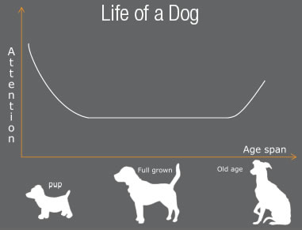

| Research | Synthesis | Design | Solution |
EyeDog

Synthesis |
Research Synthesis |
Dog Service Blueprint
This model is a variation of the service blueprint model. This models shows all of the activites that a dog might do. An interesting highlight on this model is that there are no physical artifacts associated with a dog being left at home. This shows a potential opportunity area for an intelligent smart home agent.

Territory Map
This map shows all of the people and things a dog interacts with.

Lifecycle Model
This model shows the amount of attention people give to their dog throghout the dog's life. When people first get a puppy they spend a lot of time playing and give it a lot of attention. Then as the puppy grows it becomes a regular member of the family. Finally, in its older age, the dog usually needs more care and attention.
